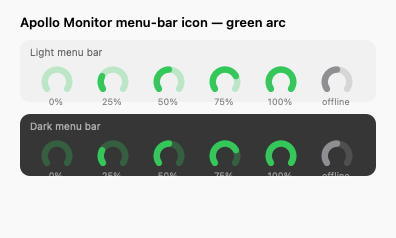
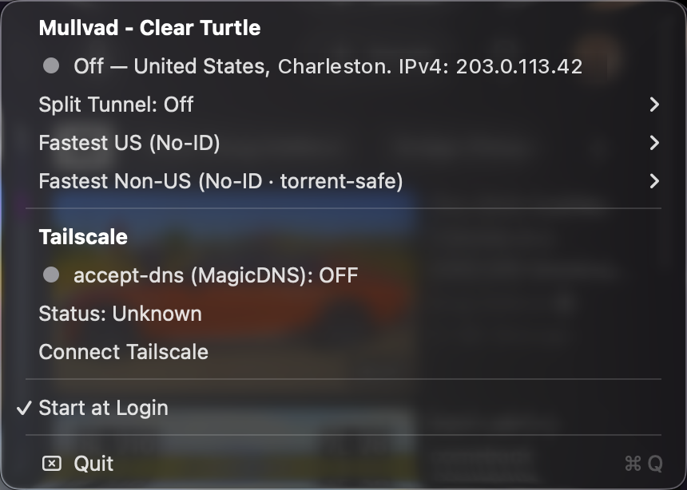
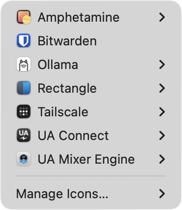
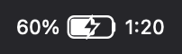
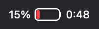
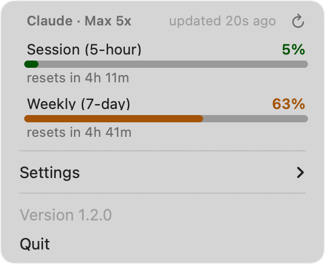

KeyLight
Remaps Ctrl + the brightness keys to keyboard-backlight up and down, with the current level shown in the menu bar. A drop-in replacement for using BetterTouchTool for just that.
StatusItemKitHotkeyKit

Where the menu-bar widgets live.
Ten small, standalone macOS menu-bar apps, built on two open-source Swift frameworks. No SwiftBar, no Electron, no subscriptions. Each one does a single job and stays out of the way.


Remaps Ctrl + the brightness keys to keyboard-backlight up and down, with the current level shown in the menu bar. A drop-in replacement for using BetterTouchTool for just that.
StatusItemKitHotkeyKit

One status dot for Mullvad VPN and Tailscale, a sectioned menu covering both, and a watcher that keeps DNS working when the two run at once.

StatusItemKit

Hides the menu-bar icons you never click. It hides by width alone instead of moving other apps' icons, so it can never strand one like Ice Menubar Manager does.

StatusItemKit

Counts the processes you own and warns before you hit kern.maxprocperuid, the limit that silently makes fork() fail in every app. Seven icon styles.


StatusItemKit

Puts the battery time-remaining estimate back in the menu bar, where Apple removed it in 2016, and updates the instant you plug in or unplug.


StatusItemKit

Claude Code plan limits and reset timers, token spend by day and model from your local transcripts, and which sessions are running, all from the menu bar.

StatusItemKit

Screen recording with system audio, the one thing QuickTime can't do, on ⌘⇧5. Recordings go straight to Downloads with no preview step.
StatusItemKitHotkeyKitScreenCaptureKit

A live level arc and slider for a Universal Audio Apollo's monitor output, with the Mac's volume keys remapped to 1 dB steps and a volume overlay macOS can't provide.

StatusItemKitHotkeyKit
Periodically stops Apple's media-analysis daemons so they stop scanning your library and burning CPU in the background.
StatusItemKit

Sweeps old files from Downloads into the Trash once a day. Restorable, never a hard delete.
StatusItemKit
Several of these started as SwiftBar plugins. They were rewritten as standalone apps because the plugin model kept getting in the way.
.app with its own icon, process, and Start-at-Login toggle. Nothing to install first, and one widget hanging can't take the others down.NSMenus with sliders, checkmarks, submenus, custom views, and the system colour picker, instead of whatever a text protocol can express.CGEventTap, mullvad status listen, ScreenCaptureKit: things a shell script can't touch, reacting the instant something changes.Every widget above is a standalone .app with its own Start-at-Login toggle, built from the same two Swift packages.

A small framework for standalone macOS menu-bar apps: the status-item lifecycle, a polling loop, a lazily rebuilt menu, text and icon rendering, Start at Login, notifications, data-driven meter icons, and a build-and-sign script that produces a proper .app.

A reusable CGEventTap engine for intercepting global keyboard and media keys, matching them against declarative bindings, and remapping or swallowing them.